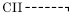
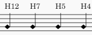
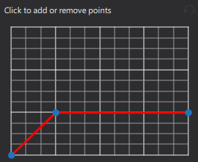

吉他技巧
将摇把符号添加到你的乐谱
摇把符号可从 吉他 面板获得（寻找放大的“V”），其应用和调整方式与推弦符号（上文）类似——在属性的“摇把”栏部分具有类似的图形界面。
你可以在“摇把类型”中选择一系列预设，或创建你自己的自定义类型。
将滑音添加到你的乐谱
滑音可以在 琶音与滑音 面板中找到。它们有两种类型：
- 滑音型滑奏：这些从一个音符或和弦滑到下一个。\

- 进/出滑音：在音符之前或之后弹奏；这些可以是上滑或下滑。\

默认情况下，滑音在乐谱上具有播放效果。你可以通过在属性面板的 常规 部分取消勾选“播放”来关闭它。
添加滑音
使用以下方法之一：
- 选中一个或多个音符作为起点，然后单击面板中所需的滑音图标。
- 将所需的滑音从面板拖到一个音符上。
对于从一个和弦到下一个和弦的中间滑音，程序会尽可能尝试连接正确的音符。如果需要进一步调整，见下文。
编辑属性
对于中间滑音，以下属性可以在 属性 面板的 滑音 部分中调整。
- 类型：在直线或波浪线之间选择。
- 显示文字：勾选此框以显示文字。注意：如果音符之间没有足够空间，文字将不会显示。
- 文字：显示在滑音上方的措辞（如果有）。
调整滑音的起点和终点
中间滑音：
要从一个音符到下一个音符垂直或水平移动终点手柄：
- 选中滑音。
- 单击起点或终点手柄。
- 按住 Shift 并按方向键（Up、Down、Left 或 Right），将手柄移动到该方向上最近的音符。
进/出滑音：
要调整终点手柄的位置：
- 选中滑音。
- 单击调整手柄。
- 拖动手柄，或使用键盘方向键。
将横按线添加到你的乐谱
横按线是一种文字线，绘制在吉他谱表上方，表示该段落需要全横按或半横按。吉他音乐中常见如下符号：
全横按（第 2 品）：\

半横按（第 2 品）：\

罗马数字前的 C 可以省略，线样式和文字的其他变化也是可能的——取决于出版方。
要应用横按：
- 单击横按的起始音符，然后按住 Shift 单击结束音符以确定范围。
- 单击 吉他 面板中的“变调夹线”符号。
- 根据需要自定义线和文字。见线属性（其他线）。
要调整线的长度，见更改线的范围。
将锤弦和勾弦符号添加到你的乐谱
锤弦和勾弦用连音线记谱。如果你还需要文字注释，使用谱表文本创建它们；它们可以保存到面板以供将来使用（见从你的乐谱添加元素）。
记谱泛音
标准谱表
自然泛音可以通过以下三种方式之一记谱：
- 在其产生的空弦音高上。例如，第三弦上的泛音显示为：\

- 在其产生的琴弦品位音高上。相同的泛音现在显示为：\

- 在实际音高上。相同的泛音现在显示为：\

通常还会附加注释，如“Nat. Har.”、“N.H.”、“Har.”，以及琴弦和品位数字；符头可以是标准的或菱形的，并渲染为空心而非黑色；品位数字可以是阿拉伯数字或罗马数字，等等。
修正播放：如果泛音没有以正确的音高播放，请将其静音，并创建一个以实际音高包含泛音的隐藏声部。
另见如何在古典吉他上识读泛音记谱（douglasniedt.com）。
吉他谱
吉他谱中的自然泛音可以简单地渲染为品位标记，也可以后跟一个点，或括在菱形中，或一对尖括号中。例如：

要创建一对尖括号：
- 选中一个泛音并添加谱表文本。
- 输入一个“单左尖引号”（U2039），然后是一个空格，然后是一个“单右尖引号”（U203A）。
- 移动文字使其位于品位标记上方；
- 调整谱表文本的字体大小及其内部空格，使其刚好包围泛音。
- 将其保存到面板以供将来使用。
谱表/吉他谱对
你应确保谱表/吉他谱对不关联，因为你需要能够独立编辑每个谱表。
记谱吉他指法
吉他指法的类型及其应用方法在指法中说明。
将推弦符号添加到你的乐谱
请勿与铜管或木管乐器推弦混淆。\ 本节介绍的是 MuseScore 4.0 至 MuseScore 4.1 中使用推弦的旧版说明。对于 MuseScore 4.2 及以上版本的用户，请参阅吉他推弦章节。
应用推弦
推弦 使用位于 吉他 面板中的 推弦工具 创建。要将一个或多个推弦应用到乐谱，使用以下选项之一：
- 选中一个或多个音符并单击面板中的推弦符号。
- 将推弦符号从面板拖到一个音符上。
乐谱中会创建一个默认推弦。你可以修改此推弦，或使用属性面板 推弦 部分中的“推弦类型”从一系列替代项中选择。
编辑推弦
推弦的形状和长度可以在 属性 面板 推弦 部分的图形显示中编辑：

蓝色节点之间的每个红色线段代表推弦中的一个步骤，每个步骤在乐谱中水平延伸 1 sp.。任何线的斜率都表明它是上推、下推还是保持。因此，上图描述了上推，然后是保持——总长 2sp。
图形的垂直轴表示音高被推上或推下的幅度：一个单位（小正方形的边长）等于四分之一音，2 个单位等于半音，4 个单位等于全音，依此类推。
向推弦添加另一个步骤
- 通过单击相应的线交点来添加另一个节点。
删除推弦步骤
- 单击相关节点将其移除。
调整推弦高度
推弦的高度会自动调整，使任何文字都出现在谱表正上方。如有必要，可以使用变通方法调整此高度：
- 在你想让推弦开始的音符上方（缩短高度）或下方（延伸高度）垂直创建另一个音符。
- 将推弦应用到新音符。
- 要调整推弦的高度，垂直移动此创建的音符，使推弦符号达到所需高度。
- 将推弦符号拖到正确的位置（原始音符）。
- 将创建的音符标记为不可见且静音（使用属性面板）。
重新定位推弦
推弦可以使用更改元素位置中所示的方法自由重新定位。